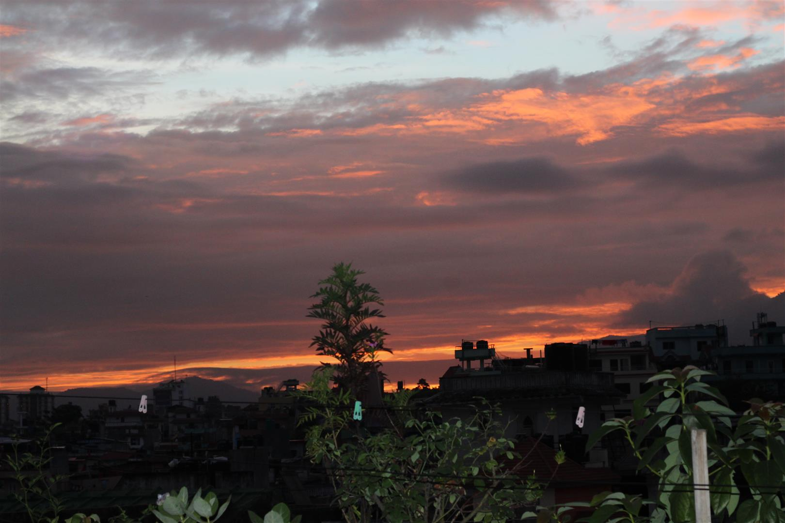
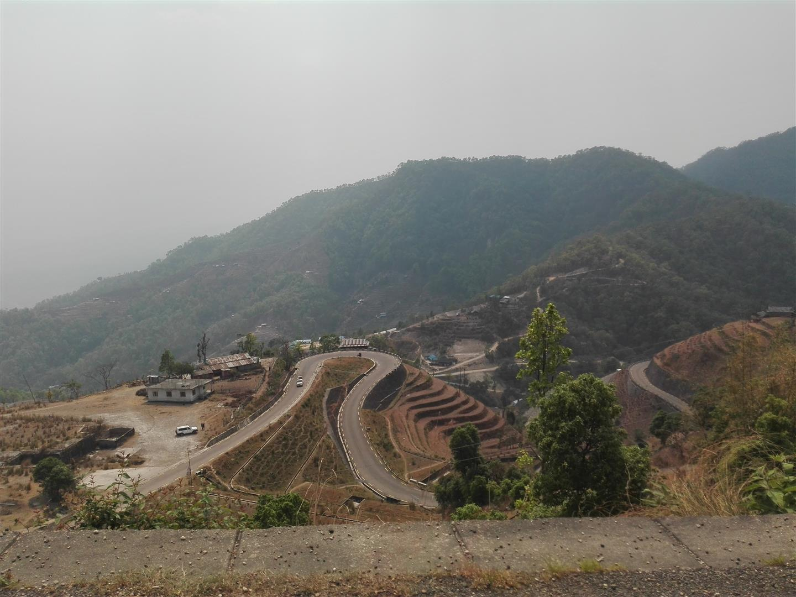
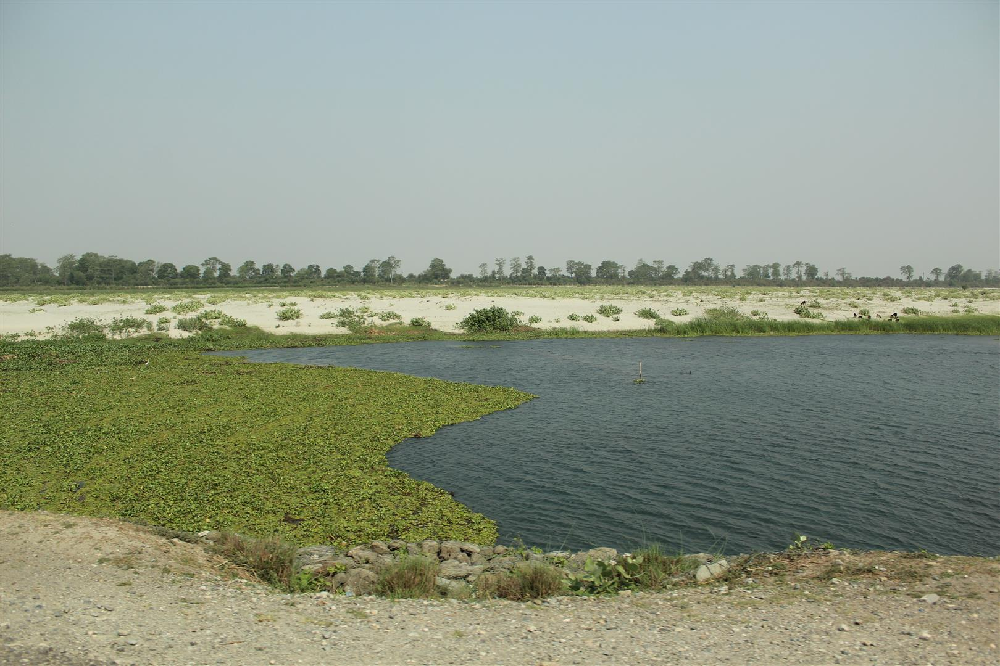
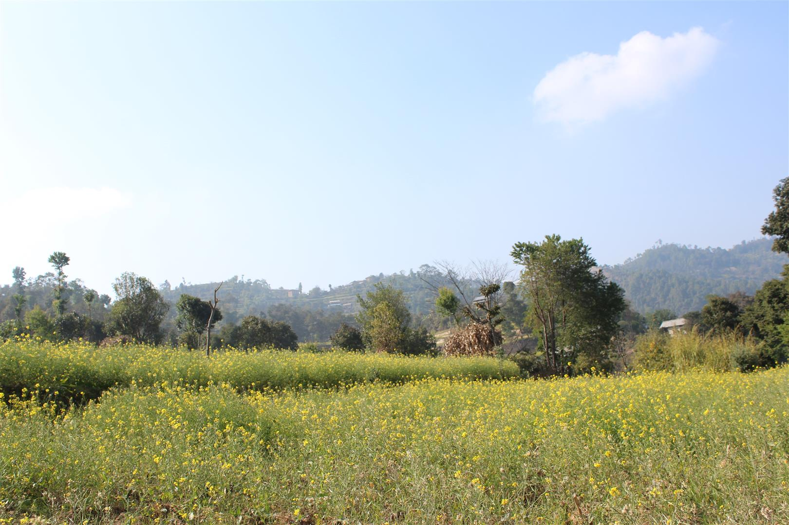
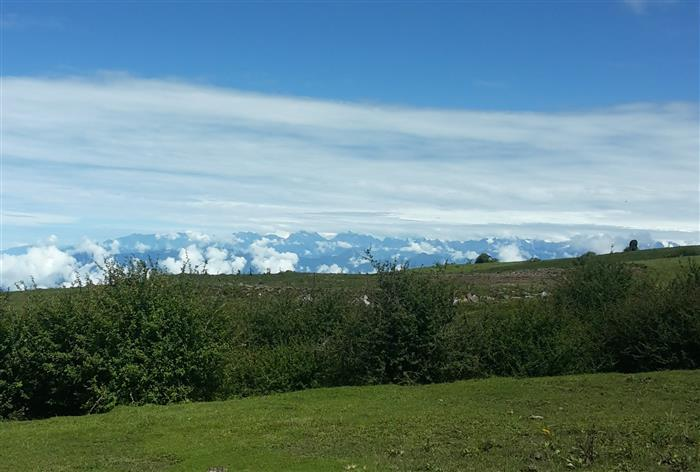

Suraj Chapagain
A Short Brief
It’s now almost a decade that photography has been a way of seeing the world for me. As an experimental photographer I am just trying to click the shutter to delve into my surroundings regardless of paths and styles of photography. As an architect and urban designer, I’ve always been fascinated by ‘Natural Scene’ and what it contains including Hills, Landscape, Rivers, bridges, Monuments, and most importantly, the cause of its existence: Natural Beauty.
As a photographer, my portfolio website is a business card to the digital world. An online presence is necessary for showing my work to the world. It is, therefore, important for every photographer to carefully think about the design and content of their portfolio websites.A portfolio is a concise collection of photos created to show people my best work. Its purpose is usually to get a photography gig. Whether I want to do weddings, portraits, commercial jobs, or to work for an environmental group to save a piece of the earth, a portfolio is the tool that shows a customer my capabilities. The main purpose of my online portfolio is showcasing my work and making it easy for people to contact. A web design based on simplicity allows my work to stand out. It also makes it easy for visitors to navigate my website. The more intuitive the design of my portfolio website, the better my work can be experienced. A great website design matches the work of the photographer. As a travel photographer, I will want a website that exudes adventure. Even if I specialize in several types of photography, my style will have a better fit with certain web designs.
    
Other Site Links